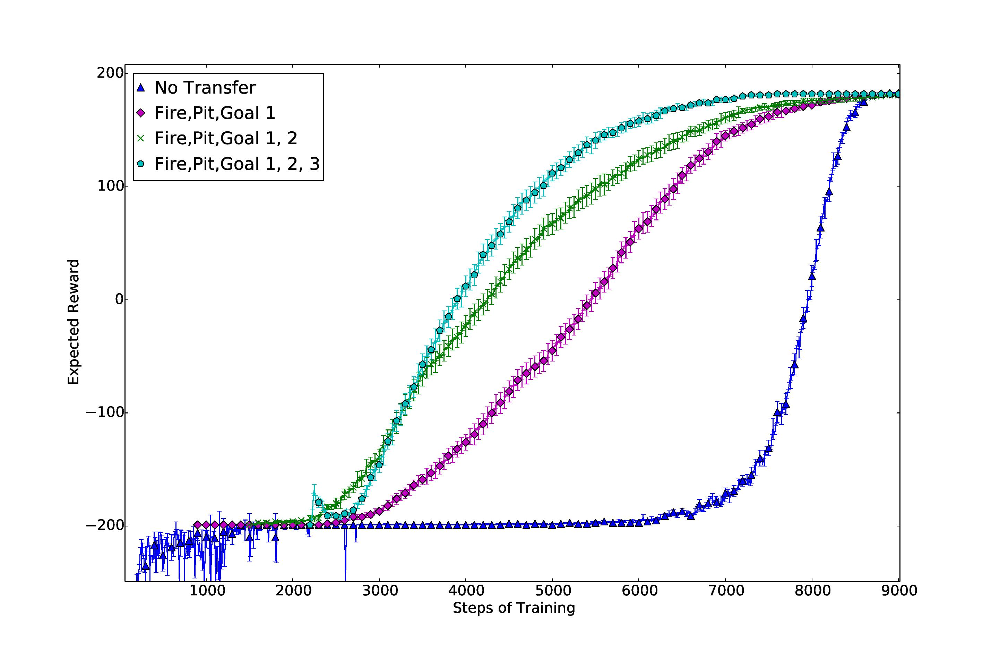

My research history
Throughout my undergraduate career at the University of Texas, I was very luckily to conduct research with great minds in the field of A.I. and Robotcs at the Building Wide Intelligence Lab.
The following are descriptions of papers I contributed to or authored during my time at UT.
Automatic Curriculum Graph Generation for Reinforcement Learning Agents
My first first-authored paper. This paper presents an algorithm for the autonomous assembly of a curriculum in a reinforcement learning context.
Transfer Learning is a learning paradigm in which knowledge learned in one task can be used to learn another task. Curriculum Learning can be thought of as a temporally extended type of transfer learning, where an RL agent can not only transfer knowledge between more than one task (a linear sequence), but can transfer knowledge from many source tasks into a single target task (a tree-like sequence).
Our algorithm assembles curriculum based on descriptions of the task and domain. Based on our evaluations in 3 domains, learning from a curriculum generated by our algorithm results in a substantial boost in learning the final target task, even when accounting for the time it takes to learn the source tasks in the curriculum.
An Early Experimental Example
Prior to evaluating the curricula-generation algorithms on more advanced domains like Block-Dude and Ms. PacMan, I designed a smaller, simpler Gridworld type domain. This domain had 4 basic qualities- pits, fires, goals, and empty. Pits were very bad, trapping the agent and ending the episode. Fires gave negative reward, but didn’t end the episode. Goals gave positive reward and ende the episode. Empty cells didn’t give reward.
Thus an optimal policy would lean towards avoiding pits at all cost and fires if at all possible, while moving towards the goal cell.

You can see in the image above a comparison of a baseline Q-Learning agent (blue triangles) with the curricula for comparison. In this experiment, the only difference between curricula was the inclusion of 1 additional (green Xs) or 2 additional (cyan pentagons) goal tasks.
The impressive thing about curriculum learning in this experiment is two fold:
- the longest curriculum provides the fastest convergence to the optimal policy
- learning in small tasks first avoid some of the very negative reward experienced by the Q-Learning policy, which could be important in scenarios where experimental learning has large consequences
Note that the policies with curriculum learning are offset on the X-axis. The offset for each policy is the exact number of training steps spent learning in the transferred tasks. This fact makes it even more impressive that the full curriculum policy converged 25% faster than the Q-Learning policy.
BWIBots: A platform for bridging the gap between AI and human–robot interaction research
An overview of the BWIBots robot design project at the University of Texas at Austin. These robots are designed to be human-facing, autonomous, multi-agent platforms capable of carrying out a variety of different tasks.
I used these BWIBot robots to conduct research and push the limit of what they were capable of in their environment (the Dell-Gates Complex building). This includes robot learning and exploration, but also more specific projects such as:
- a random walk program to stress test the navigation planning and robot hardware
- sesnors and algorithms to read ‘dumb battery’ information and build model over time to estimate remaining battery life
Learning Multi-Modal Grounded Linguistic Semantics by Playing I, Spy
Grounding language beyond vision related modalities are explored in this paper. The robot explores and learns about real world objects through haptic, auditory and proprioceptive modalities and then grounds natural language to the data by playing I-Spy with human participants.
Learning to Order Objects using Haptic and Proprioceptive Exploratory Behaviors
The focus of this paper is a framework for learning ordinal object relations. The robot uses this learning framework to ground ordinal relational meanings from humans, after first acquiring haptic and proprioceptic data from exploratory behaviors.
These behaviors included pushing, lifting, grasping, lowering, pressing and dropping. From these, the robot was able to ground meanings to ordering things by height, weight and width.